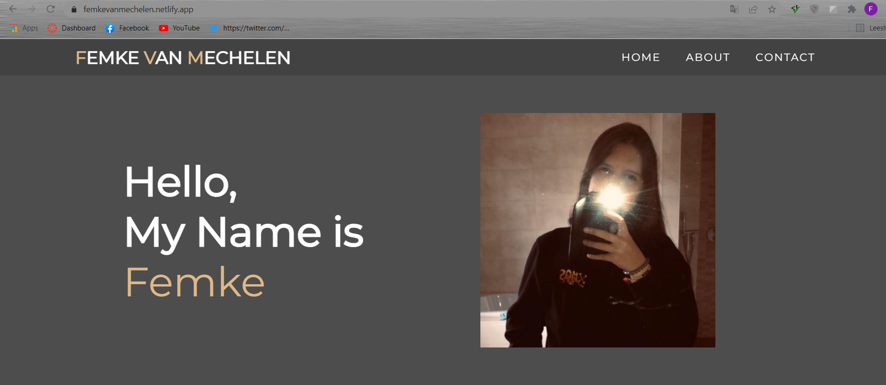
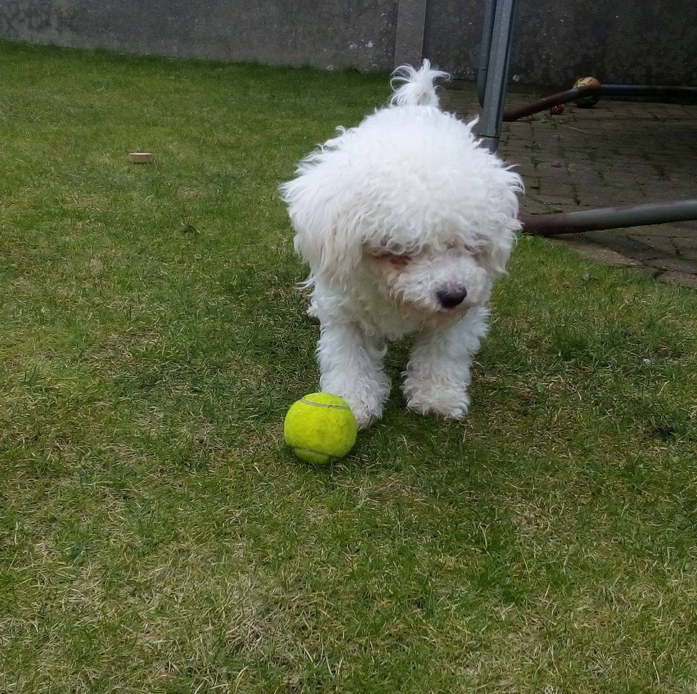
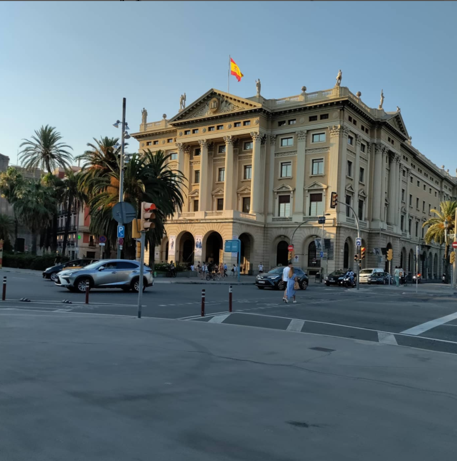
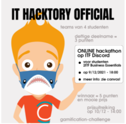
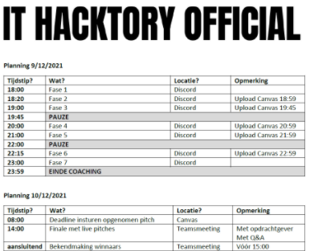
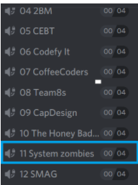
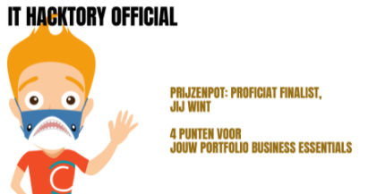

Welcome to my site, I am Femke Van Mechelen, 19 years old and I live in Mol.
On this site you can find a lot of things about myself.
With the button below you can also view my CV.
In the first and second secondary school, I studied ASO (General Secondary Education), at that time I did not know at all what direction I wanted to go later on, which is also normal at that age.
In the third year, I could make a choice of direction. I chose economy-mathematics, because both economy and mathematics interested me at that time.
I spent these three years at Campus Rozenberg in Mol. At that time, I was also very interested in computers, which made me think a lot.
From then on I wanted to do something with computers, but they didn't have that option on the Rozenberg campus.
I then switched to the Sint-Jan Berchmanscollege in Mol, where I could follow this course (computer management) in the 5th and 6th secondary school.
In the 4th secondary school, I first had to do another course for a year.
I then chose commerce, because it also involved economics and because the other directions did not appeal to me.
In the fifth secondary school, I chose computer management. In the end, this turned out to be a very good choice.
In fact, I also graduated from secondary school in that direction.
After getting a taste of the IT world in secondary school, I naturally wanted to continue in this field.
I then decided to continue studying in the bachelor applied computer science at the Thomas More campus in Geel.
That year, I also passed all my courses. Afterwards (in the second year of higher education), I chose cloud and cyber security, which is what I am doing now.
Spare time



In my spare time, I spend most of my time creating websites, which is what I love to do. Of course, I also do other things besides IT. I also have two little dogs which I love to take for a walk.
I also like going on holidays, last year I flew to Barcelona. I would like to have seen as much of the world as possible.
Projects
Systems engineering project
In the 2nd year of cloud and cyber security, for the subjects professional skills and systems engineering, we were assigned to create a solution for the specific need of our customer in a group of 3 people.
The customer was a manager of a supermarket and was looking for a system that would enable him to pass on the approaching expiry dates of products more quickly to the non-profit organisations with which he worked.
In this way, he could avoid food waste. In the beginning, we worked agile. We had discussions with the customer about what he thought was important and adapted to this. We also presented our own ideas.
The customer chose one of these ideas and we worked this out during the project week.
During the project week, our group made a system that scanned the products using a barcode scanner.
At that point, the expiry date had to be entered once; the name was taken from Unicenta (the supermarket's own database).
Then, when a product was scanned, it was retrieved from the database. This was done on the basis of first-in first-out.
Finally, our system made it possible to display all products that expired within 48 hours in PDF format.
By pressing the button on our web interface that we had made, this could be sent automatically to the non-profit organisations.
To build this system we used Unicenta for the database information and both the storing and the deleting of products, as well as the conversion to pdf and the sending of the mail were done via Python.
We linked this to a clear dashboard written in HTML.
IOT project
For the subject IOT advanced in 2 cloud and cyber security we were given the task to create a car park with 4 parking spaces in a group of 5 persons.
The car stops in front of a closed barrier with an ultrasonic sensor. The display we were allowed to make had to show how many of the 4 parking spaces were still available.
If no parking space was available, the barrier stayed closed and an LED lit up. The barrier would open when there was a free space.
A picture was taken via usb cam with which we analysed the number plate. The car parked in a free space equipped with ldr sensor.
Display was adjusted including parking place and number plate. Data on remote display was visible via web interface for the owner. Push message to owner was sent when 4 parking spaces were occupied.
IT hacktory
On Thursday 9 December, I participated in the online hackathon called 'hacktory online'.

What preceded ...
In the beginning I was allowed to register. There were a certain number of teams of 4 people we could join.
I had already agreed in advance with whom I wanted to do the hackaton. We then signed up in group 11.
In the beginning we got an assignment that we had to finish by December 6 at 23:59. Here we were allowed to make a video in which we introduced our team members and showed our logo and name (System Zombies). We were also asked which world problem we wanted to solve after Corona. We chose energy shortage.
We also got a schedule of how the hacktory was going to be organised.

The day of the Hacktory
On Thursday 9 December at 6 pm the time had come. The hacktory started. At first we were allowed to join the discord channel called Hackers Arena. Here we got some more information about what to expect and the first task was explained.
There were all discord voice channels made for each group. After the explanation we could join our own voice channel.

We could get started with our first assignment. We were allowed to brainstorm about what our SDGs would be. We received a document where we could indicate the SDGs and where we could ask a few questions. Once we had finished it, we could upload it and we could move on to the second assignment.
Every time an assignment was finished, we got another explanation about the next assignment in the Hackers Arena channel. This went on until the end of the Hacktory. Of course with breaks in between.
At the end we were ready. We were ready to record our pitch. We recorded it very well.
On 10 December, we knew who was in the final and who was allowed to give a live pitch. We system zombies were among the last four, so we were in the final.
In the end, we just didn't win, but I am very happy with our place in the finals!

I found it a really fun and educational experience. I am very happy that I was able to participate in the hacktory. I have learned a lot from it and will certainly continue to do so in the future.